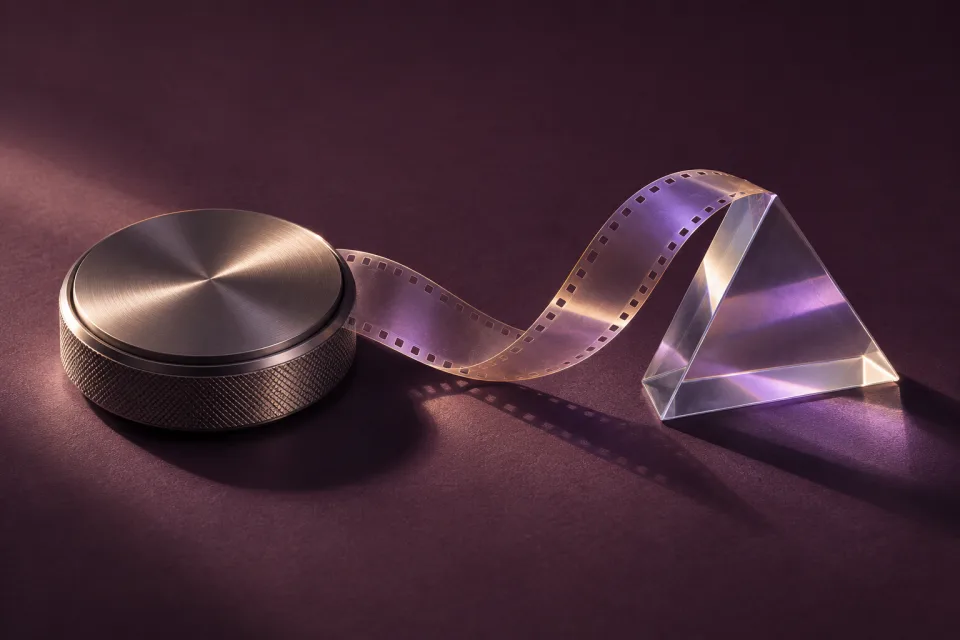

Two edits, eight seconds
One studio still contains a wheel, a strip of film and a prism. Compare two silent edits made from that same image. Each introduces the relationship between the three objects at a different moment.
Context first

Detail first
Written comparison
In the context-first edit, the wide view holds for four seconds. The wheel fills the next two seconds and the prism fills the last two. The viewer learns where each detail fits before seeing it close up.
The detail-first edit moves from the wheel at 0 seconds to the prism at 2, then reveals the whole scene at 4. The closing wide frame answers how the two objects connect. At 3 seconds, compare what each edit has told you about that connection.